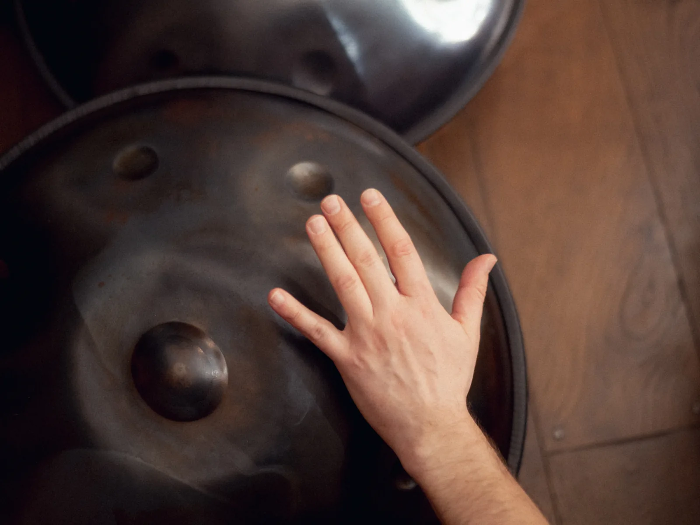
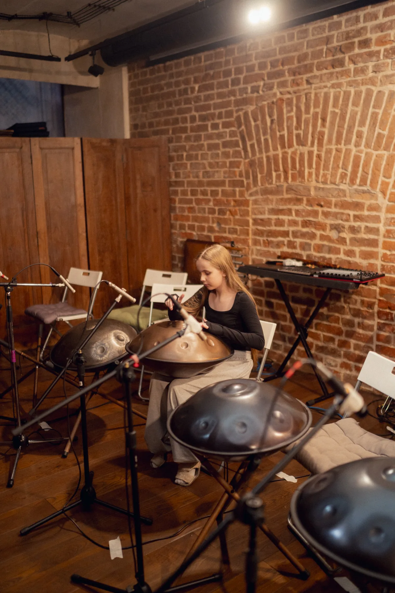

Разные подходы к игре на ханге
Мастера играют на ханге по-разному: для ханг-пионера Manu Delago он звучит как арфа или перкуссия, для Liron Meyuhas – как инструмент сердца, тела и духа, а создатели PANArt советуют просто следовать за звуком, не ставя целью мелодию
Ханг не требует музыкального образования, но вознаграждает за внимание к звуку

От первого звука – к собственной музыке
На ханге легко начать играть. Но чтобы действительно владеть инструментом, одной интуиции недостаточно
В обучении соединяем технику, ритм, слух, мелодию и импровизацию – постепенно переходя от повторения за преподавателем к самостоятельной игре
Не просто набор упражнений
Каждый этап добавляет новый уровень контроля над инструментом: звук и движение, затем ритм и мелодия, после – импровизация и собственная музыкальная речь
- 01ОсноваПоложение рук · звукоизвлечение · базовые удары · координация
- 02РитмПульс · простые рисунки · игра двумя руками · чувство времени
- 03МелодияЛад · фразы · последовательности нот · разбор композиций
- 04ИмпровизацияРабота со структурой · вариативность · развитие слуха
- 05Собственный языкСоздание своих ритмов, мелодий и композиций
Как строится путь
- 1месяц
Осваиваете базовые техники: как держать инструмент, как извлекать звук, первые ритмы. Играете простые мелодии
- 3–6месяцев
Уверенно играете ритм и мелодию одновременно. Начинаете импровизировать. Можете сыграть несколько композиций
- 6+месяцев
Свободно владеете инструментом. Играете «из потока». Можете выступать или играть для себя в удовольствие
Форматы и цены
Не знаете, какой формат выбрать? Начните с пробного занятия
Что нужно

Инструмент ждёт в студииУчимся у тех, кто двигает культуру ханга вперёд
Наши преподаватели формировали российскую культуру ханга с самого её начала. Сегодня они развивают собственную практику, исследуют возможности инструмента и учатся у мастеров мировой сцены
Что говорят ученики
Реальный отзыв ученика: конкретный результат и срок
ждём от школыРеальный отзыв ученика: конкретный результат и срок
ждём от школыРеальный отзыв ученика: конкретный результат и срок
ждём от школы